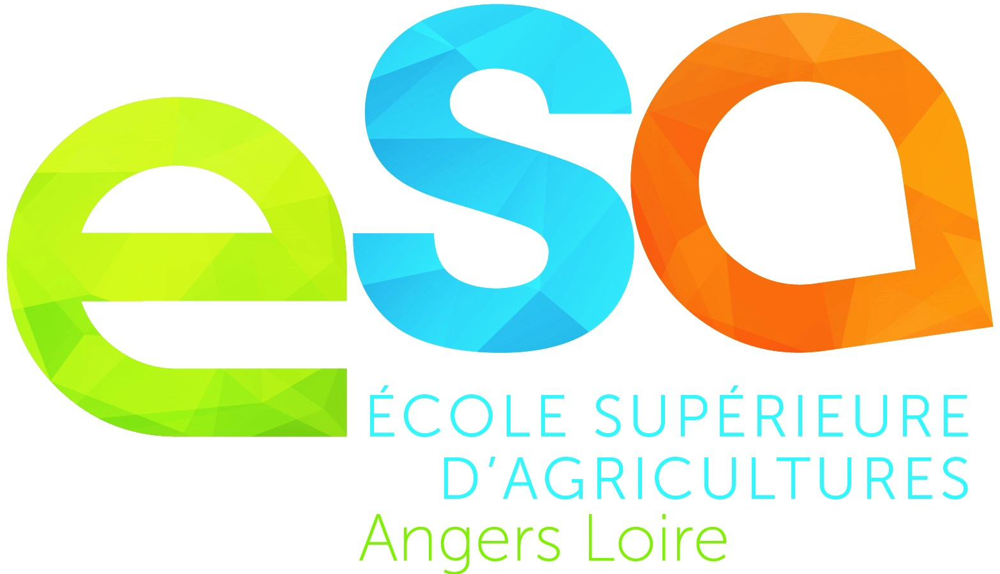

Explorer la nature
Parcs, jardins et espaces naturels angevins à découvrir près de chez vous.
Vert, t'y go · Angers
Vertigo est un guide pour découvrir les oasis vertes et les bonnes adresses engagées pour l'environnement d'Angers. Parcourez la carte pour trouver un jardin où faire une pause,une balade au bord de l'eau ou un lieu où consommer plus local.
Créé dans le contexte scolaire par quatre élèves de l'Ecole d'Agriculture d'Angers, ce projet a pour ambition d'accompagner ces personnes voulant faire des choix de consommation réflechis et impactant l'influence dans les lieux que l'on reconnait d'utilité publique pour la santé, la notre et celle de la planète.

Parcs, jardins et espaces naturels angevins à découvrir près de chez vous.
Des épiceries et des adresses pour privilégier les produits bio et de saison.
Des initiatives et des lieux qui contribuent à une ville plus durable.